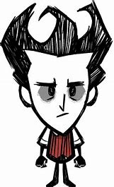
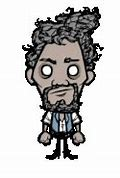
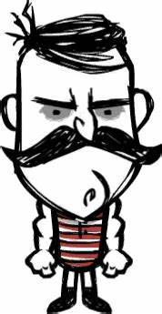
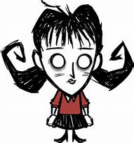

Personajes

Wilson
Le crece barba, Es el personaje con el que empezamos
Mas Informacion

Warly
Tiene una holla portatil, pero tiene penalizacion si como una comida repetidamente
Mas Informacion

Wolfang
Cuanta mas hambre tiene mas daño hace, la oscuridad le baja la cordura
Mas Informacion

Willow
Trae consigo un mechero infinito, el fuego le sube la cordura
Mas Informacion